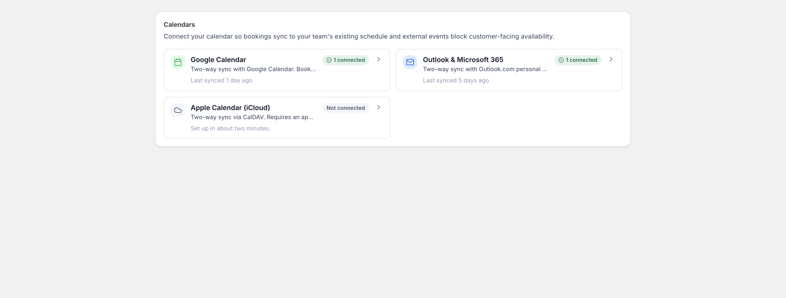

Connect Google, Outlook & iCloud
Calendar sync works both ways: bookings appear in the calendar your team already uses, and busy time in that calendar blocks your booking slots so you’re never double-booked.
Connecting
Go to Integrations in the app’s sidebar and click Connect for the calendar you use:
- Google Calendar and Outlook / Microsoft 365: sign in and approve access; you’ll be back in the app in a few seconds.
- iCloud (Apple Calendar): connects with an app-specific password generated at appleid.apple.com, not your real Apple password.

Connections are per staff member, so each person’s bookings sync to their own calendar. You can also add a manager connection that receives everything.
What syncs
- Out: new bookings, reschedules, and cancellations push to the connected calendar immediately, with the customer’s name and details on the event.
- In: with two-way sync on, events created directly in the calendar mark that time as unavailable in the booking widget. When an outside event lands on top of an existing booking, you choose which side wins in the connection’s settings.
Virtual services: Meet & Teams links
For a virtual service, each booking gets a video-call link created with the calendar event: Google Meet through a Google connection, Microsoft Teams through a Microsoft connection. The link goes to the customer in their confirmation email and calendar attachment, and to your staff on the event itself. Prefer your own room? Give the service a fixed link instead.